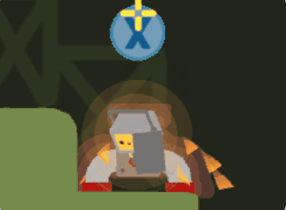
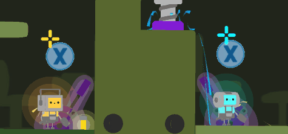
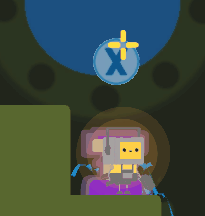
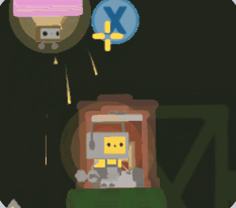
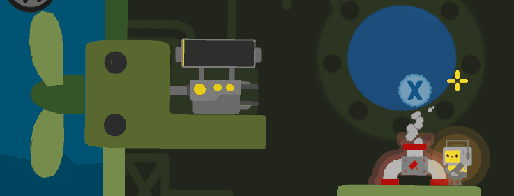
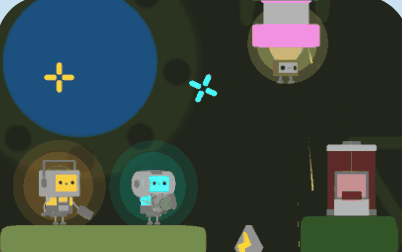

unity · c# · co-op
Gameplay Programmer · Game Designer
Play co-op as two little robots tasked with rescuing submarines in distress.
Complete a series of small tasks to repair the submarine's various problems, all while keeping its engine running so it can reach a safe harbour.
Use the objects at your disposal… and even your partner ! Throw each other around to move through the submarine more easily and overcome obstacles.
The tasks are the core of the gameplay and therefore held a central place in the game's production. They are the player's only means of action, serving both as a progression mechanic and as a survival system.
Their design had to meet several requirements: be quick to understand, play out smoothly, and allow a natural flow in order to maintain a good gameplay pace. Designing each task required particular attention, as it directly shapes player engagement and the overall balance of the experience.
We wanted a repetitive activity that never became boring. Each task therefore had to take the player a little time — never an instant completion — in order to play against the overall match timer that slowly ticks away. We ended up with 6 different tasks.

Task · Press
On reaching the task, the player must repeatedly press the X button to complete it.

Task · Duo
This task requires both players to be present at the same time. To complete it, they must press the indicated button simultaneously.

Task · Screwdriver
The player must perform a rotating motion with the joystick to simulate the act of screwing.

Task · Timing
The player must press the button at the exact moment a visual or audio cue indicates, in order to complete the task.

Task · Battery
The player must throw a battery and aim correctly to recharge the submarine's power system.

Task · 6
The player must throw a nearby object and aim correctly at the pipe to free the submarine crew in danger.
To keep the gameplay flowing, tasks disappear once completed. The real challenge lay in their respawn.
To push players to keep moving, we limited the number of tasks on screen and handled spawning based on the players' positions. The level was split into zones, so we always knew where the players were — and, above all, where they weren't.
Zone boundaries. Each task is assigned a specific zone, determined by a calculation based on its on-screen position.
Player detection. The system continuously analyses which zone the player is not in.
Targeted spawn. A new task appears in a free spot, forcing the player to move in order to reach it.
Twofold pressure. The physical pressure of constant movement, and the mental pressure of the submarine's health gauge slowly creeping toward zero.
Playable build, itch.io page or source code — add your links here.